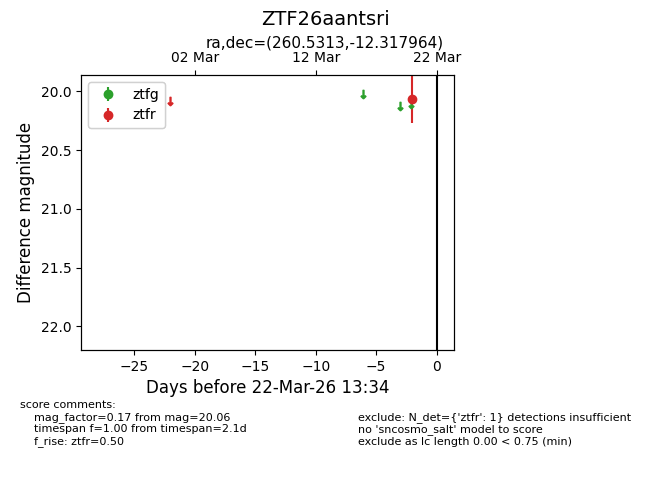
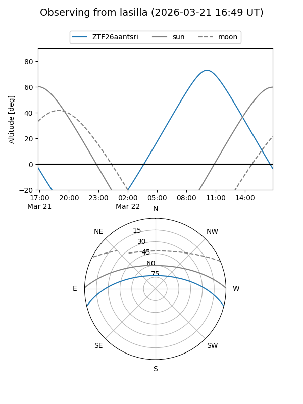
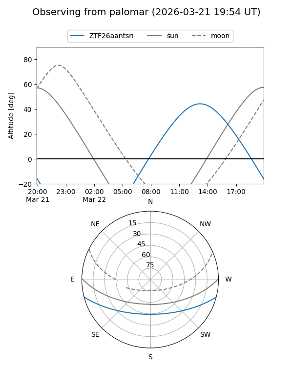

ZTF26aantsri
Target ZTF26aantsri at 2026-03-22 13:36
Aliases and brokers:
FINK: link
Lasair: link
ALeRCE: link
alt names
ZTF26aantsri (ztf,fink_ztf)
Coordinates:
equatorial (ra, dec) = 260.5313,-12.31796
equatorial (HMS+DMS) = 17:22:07.52,-12:19:04.67
galactic (l, b) = (11.2607,+13.47694)
Flags:
Photometry:
last ztfr=20.06
1 ztfr detections
Lightcurve

Visibility


Additional plots